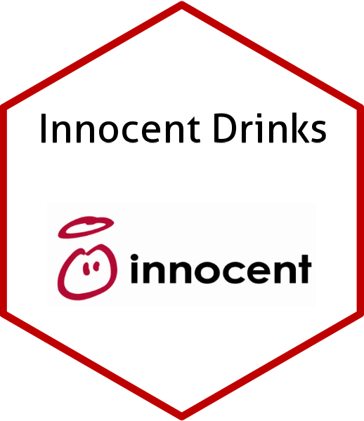

Innocent Drinks
Contribuição dos serviços ecossistêmicos fornecidos por polinizadores e inimigos naturais em regiões de Mata Atlântica e Cerrado
By Paula Montagnana in Projetos
December 15, 2023
Innocent Drinks 
O projeto
O projeto foi fruto da parceria entre pesquisadores da Universidade Estadual Paulista (UNESP), Universidade Federal de São Carlos (UFSCar) e empresa britânica Innocent Drinks, sendo a última a financiadora do projeto através do Farmer Innovation Fund. Farmer Innovation Fund é um fundo destinado a apoiar os agricultores parceiros da empresa a migrarem para práticas agrícolas regenerativas que melhorem e protejam a saúde do solo, os recursos hídricos, a biodiversidade e o clima.
Objetivos
O projeto avaliou a contribuição dos serviços ecossistêmicos providos por polinizadores e inimigos naturais em pomares de Citrus localizados nos biomas Mata Atlântica e Cerrado no estado de São Paulo.
Para isso, foram identificados potenciais polinizadores, inimigos naturais e pragas, monitorada a riqueza de espécies e abundância à diferentes distâncias dos remanescentes de vegetação nativa.
A consultoria
Fui contratada pela coordenação do projeto para atuar como Consultora em Ciência de Dados, aplicando meus conhecimentos em análises estatísticas e análises espaciais. Minhas atribuições incluíram:
- Elaboração do desenho experimental para coleta dos dados em pomares de Citrus
- Análises espaciais
- análise de correlação espacial entre os pontos de amostragem
- cálculo de métricas de paisagem
- elaboração de mapas
- Análise exploratória dos dados
- Análise estatística de dados multivariados, não paramétrica
- Ajuste de modelos preditivos do tipo GAM (Generalized Additive Models)
- Seleção de Modelos
- Teste de hipóteses
- Apresentação dos resultados ao financiador do projeto e pesquisadores europeus parceiros
- Posted on:
- December 15, 2023
- Length:
- 2 minute read, 230 words
- Categories:
- Projetos
- See Also:
- TCC MBA Data Science
- Euglossini PELD